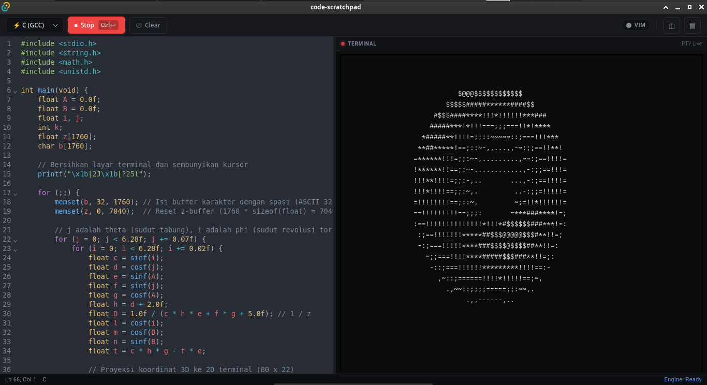

Membangun Sistem Web Andal
& Arsitektur Berorientasi
Efisiensi Performa.
Halo, saya Yori. Mahasiswa Sistem Informasi di Universitas Terbuka yang berfokus pada pengembangan Back-End. Saya terbiasa mendekati tantangan rekayasa perangkat lunak secara terukur—membangun alur logika yang bersih, aman, dan dapat diandalkan untuk kebutuhan jangka panjang.
Manajemen Resource & Ekosistem Linux: Pengalaman
bekerja erat di lingkungan Linux memberi saya kepekaan terhadap
alokasi memori, eksekusi proses, dan efisiensi I/O untuk
meminimalkan beban server dan latensi.
Arsitektur API & Integritas Data:
Saya berfokus pada perancangan skema database relasional yang
terstruktur, penanganan exception yang ketat, serta konsistensi
kontrak API yang siap diintegrasikan.
KARYA TERPILIH (2025-2026)
Ludwig Commerce
Platform e-commerce berbasis Laravel dengan autentikasi multi-peran, manajemen inventaris stok real-time, dan pemodelan relasi database relasional yang teruji ketat.

Fondasi & Toolkit
Ekosistem dan teknologi yang saya gunakan.
Monqe.site
Aplikasi web monitoring penanganan keluhan pelanggan dan rekayasa kualitas (QE) yang dirancang untuk mendukung efisiensi operasional di PT Telkom Indonesia.

UTReminder
Aplikasi berbasis Laravel untuk manajemen jadwal perkuliahan dan pelacakan tenggat tugas secara terorganisir guna menjaga kedisiplinan alur belajar mahasiswa.

API-BRIDGE Logistics Engine
Layanan backend dan integrasi API untuk komputasi jarak dinamis, mengkalkulasi tarif per kilometer, biaya dasar perjalanan pertama, serta akumulasi biaya rute bertingkat.

Code Scratchpad
Aplikasi eksekusi kode terisolasi dengan editor terintegrasi dan live PTY terminal, dirancang untuk pengujian logika algoritma dan eksperimen komputasi secara instan.

LazyVim Cheatsheet App
Aplikasi referensi interaktif berbasis tema Tokyo Night dengan fitur pencarian cepat pintasan keyboard, manajemen buffer, dan navigasi Neovim terstruktur.

Note Food
Aplikasi Android untuk pelacakan keuangan donasi pangan dan operasional belanja dapur secara real-time, dilengkapi kalkulasi pendapatan bersih otomatis, rincian belanja bahan pokok, dan pencatatan berbasis offline.

Cinematic Scene Pipeline
Sistem orkestrasi pipeline berbasis Python dan runner uv untuk mengubah premis naratif menjadi storyboard adegan sinematik multi-scene, memetakan konsistensi anchor karakter, serta mengeksekusi kompilasi prompt ke engine render gambar secara paralel.

Fondasi Sistem Berkelanjutan.
Stabilitas perangkat lunak bermula dari lingkungan pengembangan yang terisolasi dan alur kerja yang disiplin. Dengan memanfaatkan ekosistem Linux, konfigurasi server yang rapi, dan pengujian API yang terukur, saya memastikan setiap sistem yang dibangun beroperasi secara konsisten dari tahap development hingga deployment.